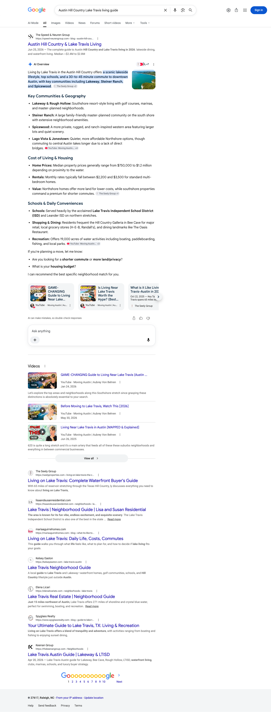
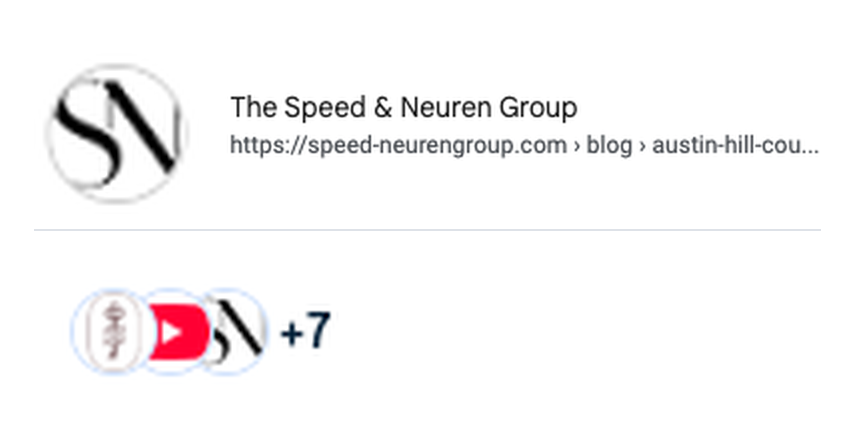

July 2026 | The Speed & Neuren Group
Executive summary
This is your first Total Search report, so read it as a baseline rather than a result. Tracking opened in late July and eight of your forty-five built pages are live. Everything below is what the site is earning with those eight live. This first question pack is scoped to those eight pillar topics, your brand query and three adjacent Austin questions, so it reads your published content rather than the whole Austin market, and it widens as the rest of the pages go live.
In that window, speed-neurengroup.com was cited as a source on seven of the twelve Austin questions we track. Perplexity carries all seven of them. ChatGPT cites you on two, including your brand query, so your own site is among the sources it uses when someone asks about the team by name.
Google is the open front. Google built an AI Overview on ten of the twelve questions and your site appears among the sources on one of the twelve. On nine of them it is writing the answer from other sources, and on the remaining two it produced no Overview in this reading. Six of those nine questions already have a page live, so the Google gap is first a question of how those pages answer and only then a question of how many are published. The other three have no page live yet, and one of them, the Westlake price premium question, is already written and waiting in the upload queue.
Citation matrix
✓ Cited: your site is among the sources that answer drew on
– Not cited in the reading for that column
◦ Google did not generate an AI Overview for this question, so there was no AI answer to be cited in
| Buyer question | Google AI Overview | Perplexity | ChatGPT | |
|---|---|---|---|---|
| Austin Hill Country Lake Travis living guidespeed-neurengroup.com | ✓ | ✓ | – | |
| Best luxury neighborhoods in Austin TX | – | – | – | |
| Is Westlake worth the price premium in Austinspeed-neurengroup.com | – | ✓ | – | |
| Living in Bee Cave TX near Austinspeed-neurengroup.com | – | ✓ | – | |
| Living in Lakeway TX Lake Travis waterfront homes | – | – | – | |
| Living in Rollingwood Austin TX homes schoolsspeed-neurengroup.com | – | ✓ | ✓ | |
| Living in Tarrytown Austin TX homes | – | – | – | |
| Living in Westlake West Lake Hills Austin TX homes schools | – | – | – | |
| Luxury real estate in Austin TX guidespeed-neurengroup.com | – | ✓ | – | |
| Moving to Austin TX relocation guide 2026speed-neurengroup.com | ◦ | ✓ | – | |
| Moving to Austin from California where to live | – | – | – | |
| Speed and Neuren Group Austin real estatespeed-neurengroup.com | ◦ | ✓ | ✓ |
Reading the matrix. A check mark means your site is among the sources the answer drew on. It does not mean your brand name is spelled out in the answer text. On Google AI Overviews it can be your site icon in the answer’s source strip, which is how the Google citation below was recorded. Seven of the twelve questions are cited on at least one engine, Perplexity accounts for all seven, and Google generated an AI Overview on ten of them while carrying your site as a source on one. The Google AI Overview column was read on August 1, 2026. Perplexity and ChatGPT were read across the July window, Perplexity on more days than ChatGPT, so those two counts are not a like-for-like comparison. On five of the ten questions where Google produced an AI answer, the source panel was cut off before its third source could be read. We scored every one of those not cited rather than assume, so the Google count is a floor rather than a ceiling. Each row records the domain that was cited, not the individual page. Nine of these twelve questions map to a page that is already live, so an empty cell on those rows is a page to strengthen rather than ground you have not claimed; the other three have no page live yet.
How to read the columns. The Google AI Overview column is a single reading taken on August 1, and AI Overviews vary day to day, so treat it as a snapshot rather than a month. That reading was taken from a connection outside Austin, and Google localizes these answers, so a search run from inside the market can return a different result. Every AI Overview was read as Google first rendered it, with collapsed source lists left unexpanded and side panels as displayed. So any list of sources named in this report is what Google showed first on that reading, not a complete inventory of everything the answer drew on. Perplexity and ChatGPT rebuild their answers on every run, and their source sets shift day to day as well. A check mark in those two columns means your domain was among the sources on at least one reading in July, not that it appears on every run.
Story one
Perplexity cites speed-neurengroup.com on seven of the twelve questions: six Austin buyer questions and your brand query. What the answer records is the domain, not the individual page, so read it as the whole site earning trust rather than any single URL. Every question in this pack sits in a cluster where you already have a page live, so the split between the six buyer questions that return your domain and the five that do not is not explained by which clusters you cover.
| Buyer question | Status | Owned domains cited on this question |
|---|---|---|
| Austin Hill Country Lake Travis living guide | Cited | speed-neurengroup.com |
| Is Westlake worth the price premium in Austin | Cited | speed-neurengroup.com |
| Living in Bee Cave TX near Austin | Cited | speed-neurengroup.com |
| Living in Rollingwood Austin TX homes schools | Cited | speed-neurengroup.com |
| Luxury real estate in Austin TX guide | Cited | speed-neurengroup.com |
| Moving to Austin TX relocation guide 2026 | Cited | speed-neurengroup.com |
| Speed and Neuren Group Austin real estate | Cited | speed-neurengroup.com |
Story two
ChatGPT cites you on two of the twelve: the Rollingwood community question and the Speed and Neuren brand query itself.
| Buyer question | Status | Owned domains cited on this question |
|---|---|---|
| Living in Rollingwood Austin TX homes schools | Cited | speed-neurengroup.com |
| Speed and Neuren Group Austin real estate | Cited | speed-neurengroup.com |
Story three
Google built an AI Overview on ten of the twelve questions, so the demand for an AI answer on these topics is clear. Your site appears among the sources on one of the twelve. On nine Google is writing the answer from other sources, and on the remaining two it produced no Overview in this reading, so there was no AI answer to be cited in.
speed-neurengroup.com appears in the Overview's source set, shown by your site icon in the source strip at the top of the answer. The brand name is not spelled out in the Overview text, so this is source presence rather than a named attribution, and it is the only Google AI Overview citation in this first tracking window.

The icons in an Overview header are small at full-page scale, so here is that strip enlarged, with your own site icon from the organic result on the same page above it for comparison. The third icon in the stack is the SN monogram that speed-neurengroup.com serves as its site icon.

On the other nine Overviews, Google is assembling its Austin answers from a rotating mix of national portals such as Realtor.com, Homes.com and Niche, other Austin agent sites, and YouTube and Reddit threads. The set changes from question to question, so no single competitor owned these answers in this reading. On “Living in Westlake West Lake Hills Austin TX homes schools” your page was the number one organic result on August 1 while the Overview above it drew on Darin Walker, Van Heuven Properties and Niche. That is the clearest illustration of the difference between ranking and being cited, and it is the problem Total Search exists to solve.
Gaps as opportunities
The largest lever this month is not a writing task, because the content already exists and is packaged for upload. The sharpest one is narrower: three live pages on your highest-value communities that earn nothing yet.
All thirty-seven are written and packaged as paste-ready upload sheets numbered in order, continuing from sheet 09. Five of the eight live pillar topics already earn citations, so the pattern is established and publishing needs no new content.
The eight published posts carry the original root-slug internal links, which do not resolve to the real /blog/ URLs. Re-pasting their body from the regenerated sheets connects the cluster so authority flows between pages.
Your Westlake, Tarrytown and Lakeway community guides are live, and none of those three questions is cited yet. As of the August 1 reading, your page is the number one organic result on “Living in Westlake West Lake Hills Austin TX homes schools” while your site is not among the sources that Overview showed first. Rewriting the opening of each into a direct answer, with question-shaped headings, targets the exact slot Google is filling from another source.
Every unmatched URL on speed-neurengroup.com returns the homepage with a 200 response instead of a 404. That hides broken links from everyone including us, and it is worth correcting before thirty-seven new URLs go live.